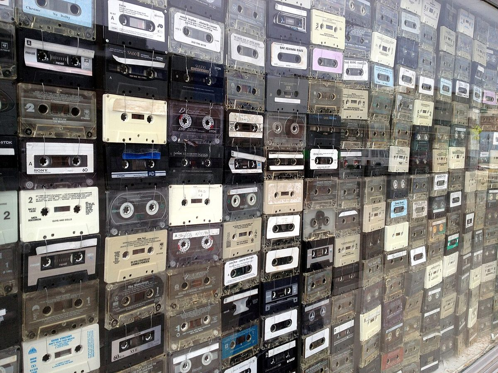

222 cassettes of Japanese weirdness
- who
- K. Yoshimatsu and DD. Records
- what
- 222 cassettes; Fossil Cocoon retrospective
- when
- 1980s
- where
- Japan

In the 1980s a small circle around the composer K. Yoshimatsu and his associate Tadashi Kamada ran DD. Records. Over five years they released exactly 222 cassettes: ambient, abstract punk, musique concrète and fragile songs, each with typewritten notes and Xerox covers made from found material.
The original tapes are now collectors' dreams. A 2024 retrospective, Fossil Cocoon, finally made them easy to hear.